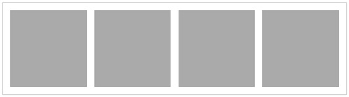
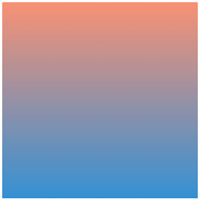
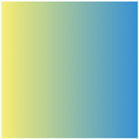
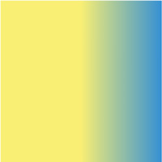
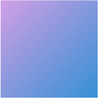
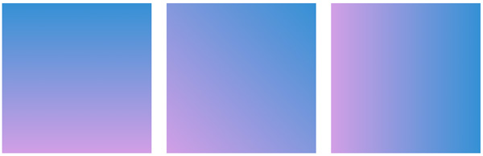
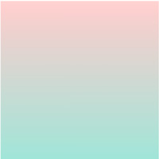

グラデーション
index.html
<!DOCTYPE html> <html lang="ja"> <head> <meta charset="UTF-8"> <title>CSS3 - グラデーション）</title> <link rel="stylesheet" href="css/style.css"> </head> <body> <div class="content"> <div class="box grd01"></div> <div class="box grd02"></div> <div class="box grd03"></div> <div class="box grd04"></div> </div><!-- /.content --> </body> </html>
style.css
* { margin: 0; padding: 0; box-sizing: border-box; } .content { display: flex; gap: 20px; max-width: 900px; margin: 50px auto; padding: 20px; border: 1px solid #aaa; } .box { width: 200px; height: 200px; background-color: #aaa; }

CSS3 linear-gradientの書き方
- gradient
- linearは「線状の」
- radialは「放射状の」
background: linear-gradient( to 方向, 開始色, 終了色 );
- background: linear-gradient( to bottom, 開始色, 終了色 ); は、初期設定
上から下に（初期値）

.grd01 { background: linear-gradient(#F89174, #3490D4); }
左から右に

.grd02 { background: linear-gradient(to right, #F8EE74, #3490D4); }
色が変わる位置を変える
- 0〜50%までは黃色で塗られ、50以降がグラデーションになる

.grd03 { background: linear-gradient(to right, #F8EE74 50%, #3490D4); }
中心から外に向かってグラデーションをかける
.grd04 { background: radial-gradient(#FFF, #3490D4); }
斜めにグラデーションをかける
- この方法で指定できるのは45度のグラデーションだけです

.grd05 { background: linear-gradient(to bottom right, #D29FE5, #3490D4); }
角度を指定する

.grd06 { background: linear-gradient(0deg, #D29FE5, #3490D4); } .grd07 { background: linear-gradient(45deg, #D29FE5, #3490D4); } .grd08 { background: linear-gradient(90deg, #D29FE5, #3490D4); }
片側を透明にする
.grd09 { background: linear-gradient(to bottom, #9FE5D8, transparent); }
片側を半透明にする

.grd10 { background: linear-gradient(to top, #9FE5D8, rgba(255, 0, 0, 0.2)); }
写真にグラデーションを重ねる（オーバーレイ）
.grd11 { background: linear-gradient(25deg, rgba(255, 0, 0, 0.4), rgba(0, 255, 0, 0.4)); } .grd12 { background: linear-gradient(25deg, rgba(255, 0, 0, 0.4), rgba(0, 255, 0, 0.4)), url(../img/01.jpg); background-size: cover; }
ボタン（グラデーション）
.btn { width: 200px;; height: 60px; margin: 10px; background: linear-gradient(#FFCED7 0%, #F74657 49%, #F10013 51%, #FE2951 100%); border-radius: 6px; box-shadow: 1px 1px 5px #AAA; text-align: center; text-shadow: 0 0 2px #000; line-height: 60px; color: #FFF; font-size: 30px; font-family: "Arial Black", sans-serif; } .btn:hover { background: linear-gradient(#D4A76A 0%, #D6AD25 49%, #D6AD25 51%, #FCCF6B 100%); cursor: pointer; }